The vernier height gage is widely used in taking measurements to an accuracy of 0.001" or 0.02 mm and for layout work i.e. marking a specified height on the workpiece. The three main parts are the foot block (base), the column (beam), and the slide arm. The main scale is on the column. The vernier scale is attached to the slide arm. Like the vernier caliper, main scale of height gages are graduated in divisions of 0.025 inch or 1mm and a vernier scale for reading measurements to 0.001" or 0.02mm. Measurements are taken in the same manner as with other verneir measuring instruments.
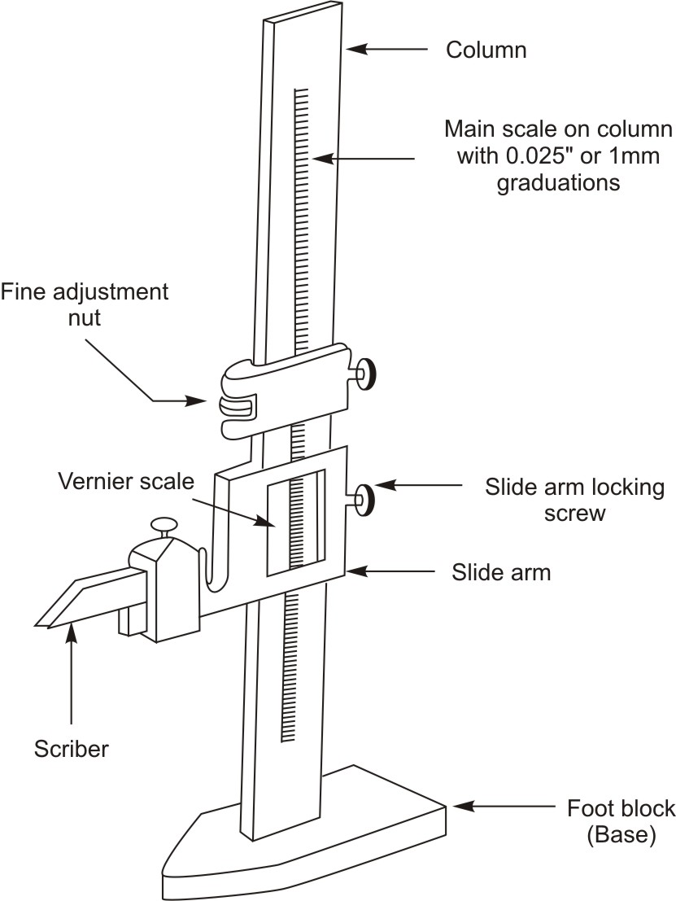
Figure 1: Vernier height gageThe vernier height gage is usually used in combination with a surface plate. It is usually designed to permit rapid adjustment and firm clamping, and the base is lapped to slide firmly and accurately on the surface plate.
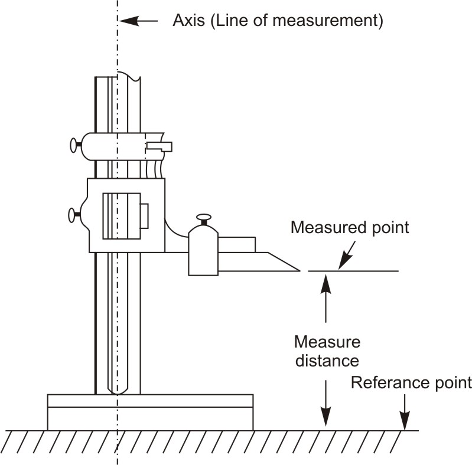
Figure 2: Taking measurement with vernier height gageAlways be sure that the bottom of the foot block is clean and free from burrs and nicks. The vernier height gage should be carefully placed on the surface plate. Apply a slight force on the base. Test whether the instrument rests solidly or if there is any slight movement. A movement indicates that the instrument is not seating properly.
Vernier height gage is used with number of attachments. A dial indicator is used for reading dimensions, which are not easily measurable. Tungsten carbide flat scriber, offset scriber, which are secured to slide arm for marking layout lines accurately on workpieces made of hard material or for making linear measurements.
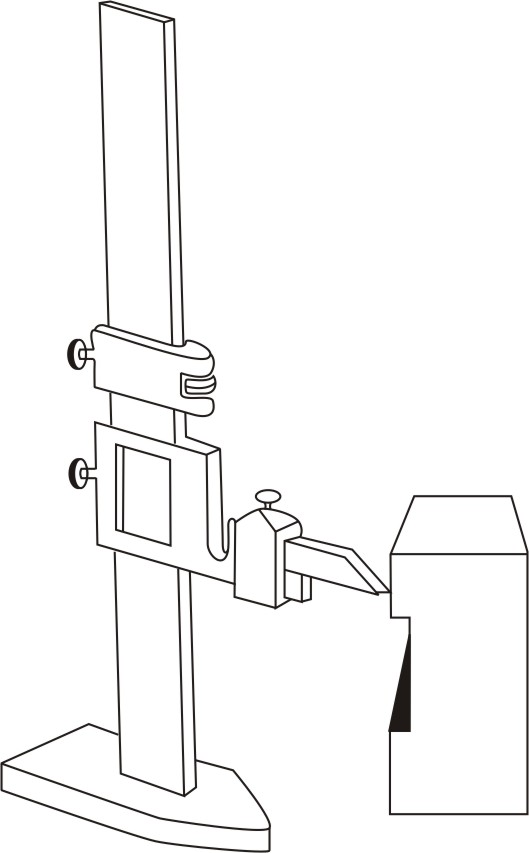
Figure 3: Using height gage with flat tungsten carbide scriber for markingOffset scriber reaches below the gage base. Depth gage can also be attached to the slide arm for making depth measurements.
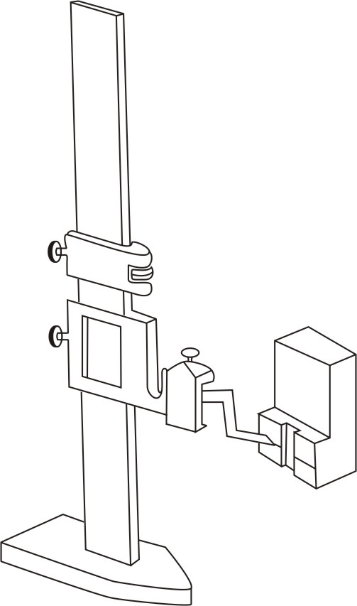
Figure 4: Using height gage with offset scriber for markingIt is used for depth measurement purpose such as measuring of depth of grooves, slots, holes. It consists of narrow steel rule with head. The narrow steel rule slides up and down through the head. In some depth gages the head is marked with angles of 30, 45, 60 degrees. It can be used to measure the sloping side of a tapered hole.
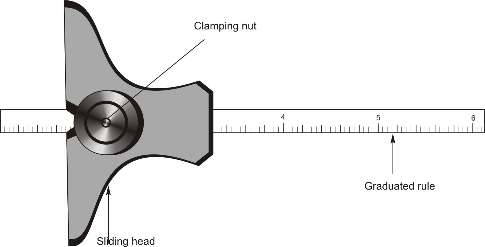
Figure 5: Depth GaugeThe feeler gage is used to determine space or clearance between two surfaces it is also referred as thickness gage. Although this tool does not give a precise measurement, the measurement is acceptable for dimensions recommended to be obtained by use of the feeler gage.
The common feeler gage consists of a group of flat steel blades made to a very precise scale. The thickness is written on the gauge blades in thousandths of an inch or tenths of a millimeter. These blades are encased with a single screw in one end to hold the leaves together. A knurled thumbnut allows locking of one or more blades away from the remainder of the pack. Combining blades allows the user to measure almost any size. A small gap between two pieces of metal is measured by finding the blade or combination of blades that is a close fit for the space. The blade should slide in and out of the space, touching both sides at the same time without wedging or being forced. If the gage and the space are of the same size, the gage will feel tight as it is moved in and out. This is where it gets the name feeler.
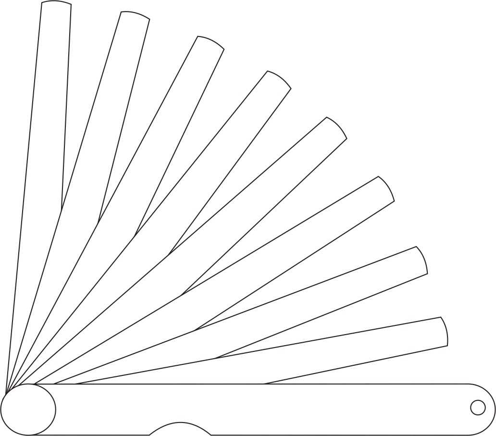
Figure 6: Feeler gageIt is used for measuring the pitch of a particular threaded part. Pitch is the distance at the same point on a thread form between two successive teeth. Pitch gage has a series of thin blades. On the edge of these blades teeth are cut corresponding to standard thread sections. These blades are encased with a single screw in one end to hold the blades together. Each blade has a number of teeth. The teeth match the form and size of a particular pitch. Each blade is marked with size of pitch. Selecting one of the thread gage blades checks pitch.
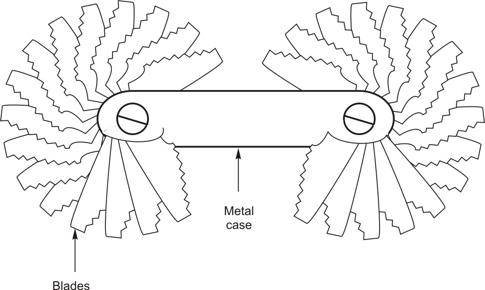
Figure 7: Pitch gage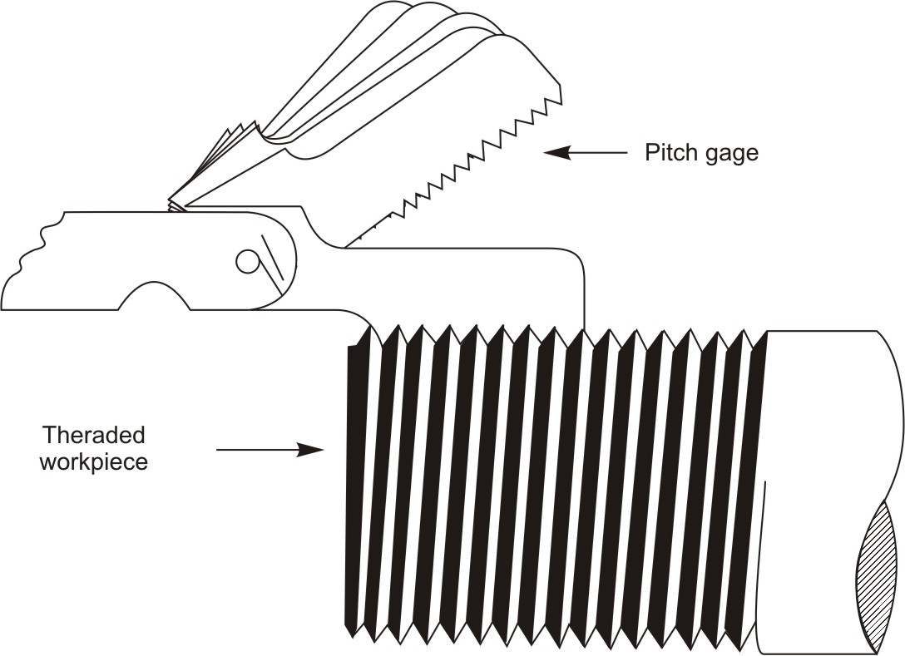
Figure 8: Measuring pitch of threaded workpieceSmall hole gages are used for transfer of measurements. These gages can be used to produce fast and accurate measurements. The end of this gage has a split ball split into two halves with a shaft in it for gaging the hole. Small hole gages usually are purchased as a set of four gages, the range of which are: 0.125-0.500 inch, proper size gage to measure your particular job. For measurement they are inserted into a hole, as an adjustment knob is turned, the head expands to the size of the hole. After adjusting the small hole gage to the desired feel in the hole, it is removed and measured with a micrometer to determine the size of the hole. It can also be used for measuring slots, keyway, or other non-circular part features.
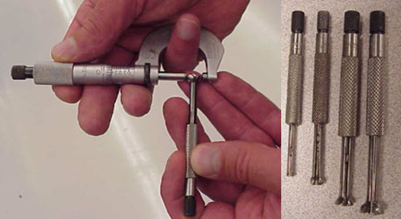
Figure 9: a, bA telescoping gage is used somewhat like an inside caliper but it is simpler to use. The telescope gage consists of a handle that has a knurled locking mechanism and two spring-loaded telescoping plungers, one of which slips inside the other. One part of the plunger is fixed to a handle, while the movable part of the plunger is forced outward by a spring. A lockscrew through the handle holds the movable part in any location. Telescoping gages come in variety of sizes that can measure from 1/2-inch to 6-inches.
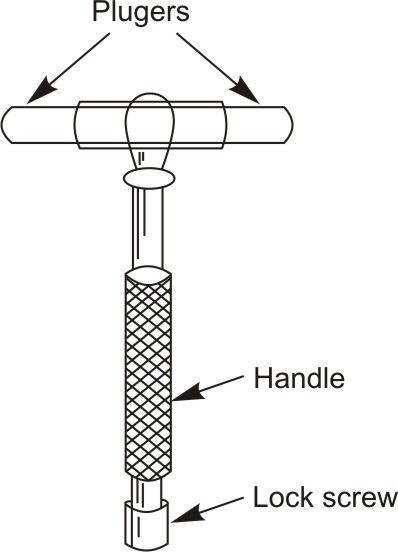
Figure 10: Telescoping gage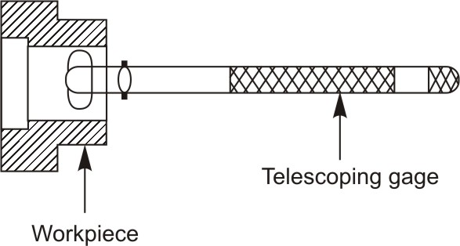
Figure 11: Using telescoping gage for transferring measurement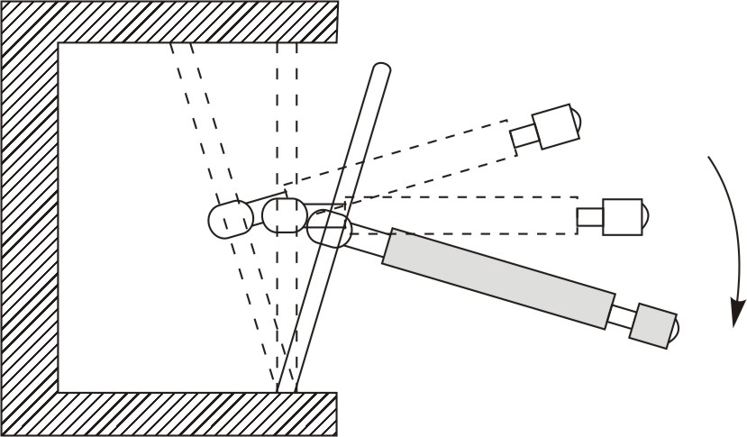
Figure 12: Rocking of Telescoping gages over center to size and center them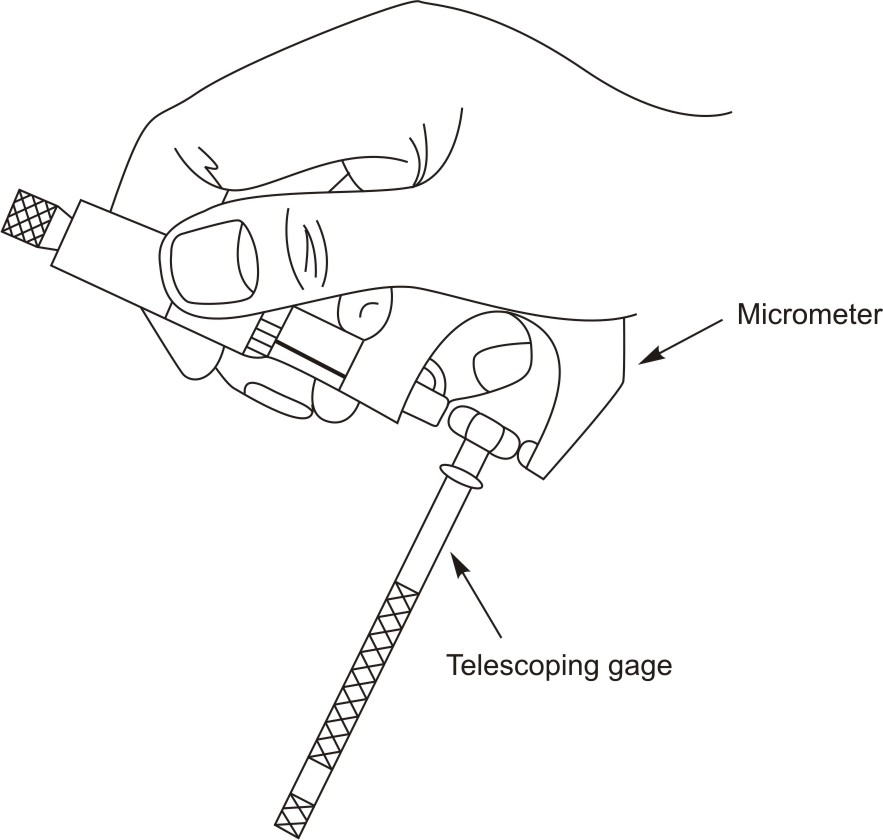
Figure 13: Measuring across the two parts of the rod with a micrometer| ← Tutorial 7 | Tutorial 9 → |